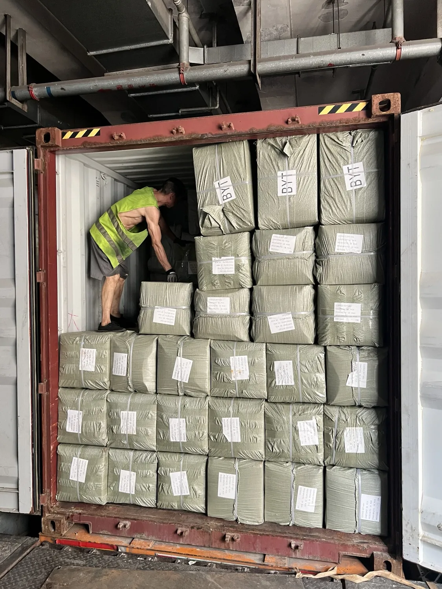
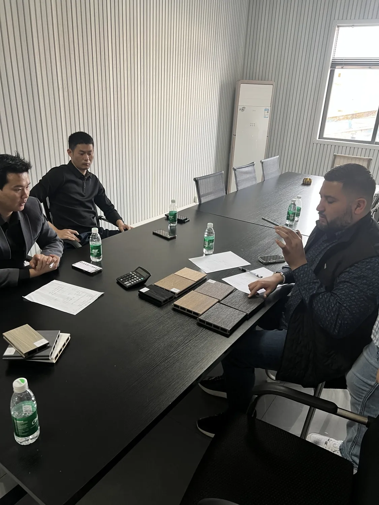
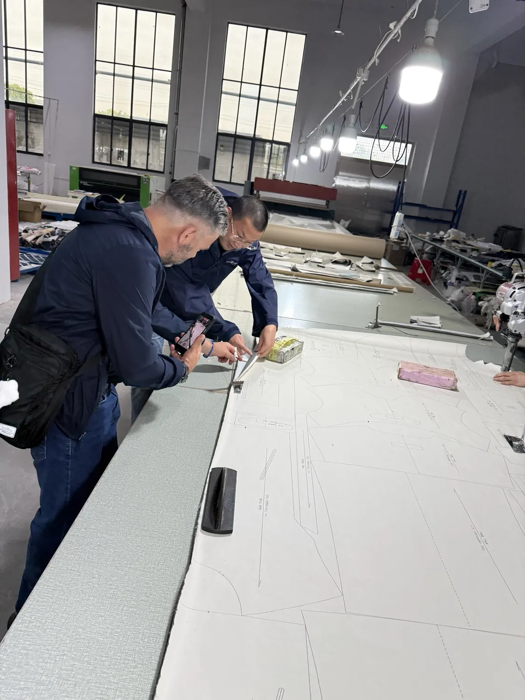
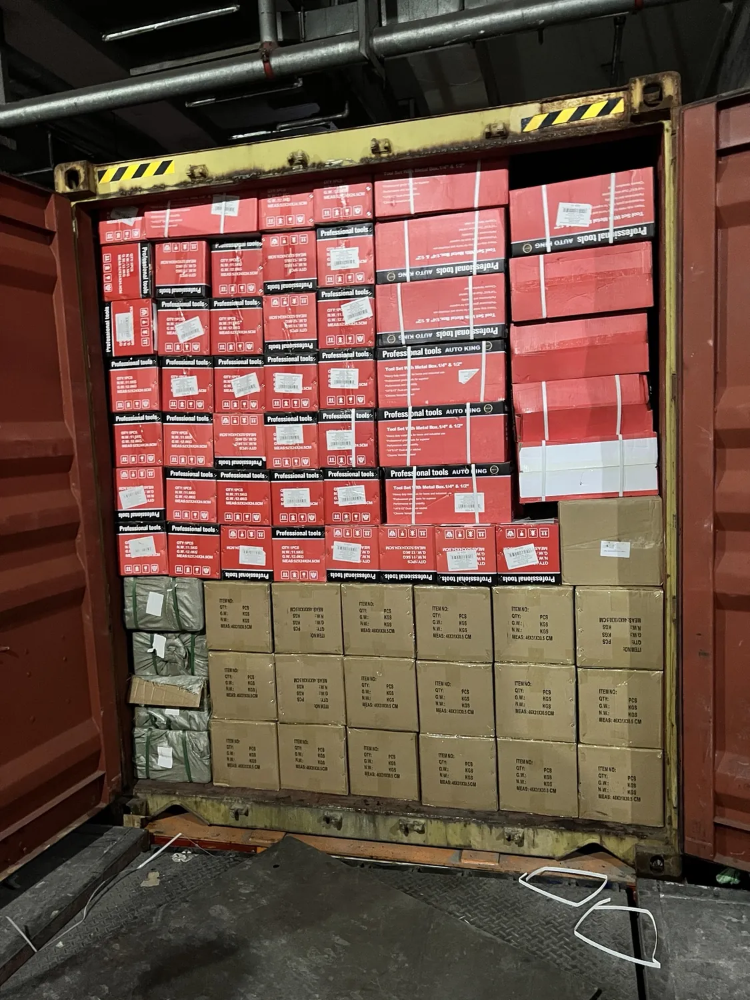

Consolidado
Paga por el espacio facturable utilizado. Mínimo 1 m³ y recargo fijo bajo 5 m³.
Calcular LCLRevisamos tu proyecto, coordinamos proveedores y organizamos la logística desde China. Cada servicio se presenta por separado para que sepas exactamente qué estás contratando.

La asesoría ordena el proyecto antes de buscar proveedores o comprometer una operación. Se paga antes de comenzar.
La página ya no mezcla todos los servicios en un solo formulario.
Paga por el espacio facturable utilizado. Mínimo 1 m³ y recargo fijo bajo 5 m³.
Calcular LCLRevisión para 20GP, 40GP o 40HQ con costos de origen y flete separados.
Revisar FCLInspección, conteo, medidas, empaque y evidencia antes del despacho.
Consultar inspecciónServicio adicional para localizar, comparar y negociar con proveedores.
Comenzar con asesoría
La estimación pública separa mercancía, flete por m³, búsqueda opcional e impuestos de destino.
Las imágenes de viajes se movieron a su propia página. Aquí quedan solo operaciones, fábricas y clientes.






Estos servicios ya no aparecen como si fueran el centro de la operación.
Shipping marks, códigos, etiquetas y coordinación de empaque después de confirmar proveedor, producto y cantidades.
Apoyo remoto o presencial para reuniones, proveedores y fábricas.
Revisa itinerarios base para Yiwu, fábricas y rutas comerciales por distintas ciudades.
Ver paquetes de viaje